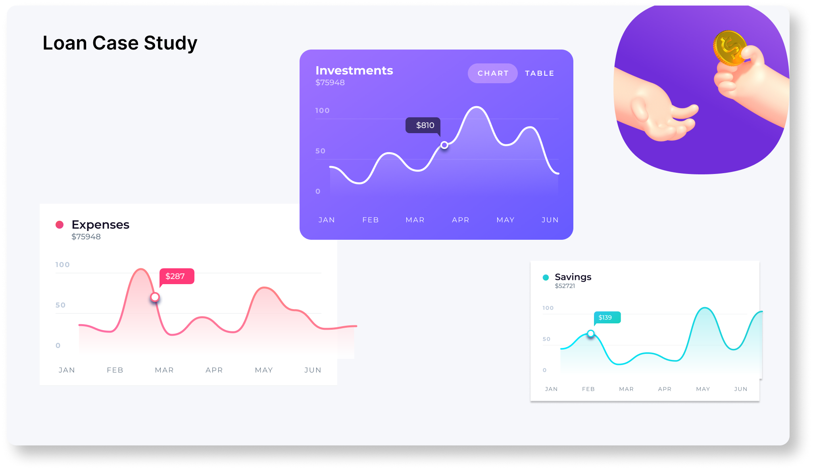

User analysis is the process by which we track how users engage and interact with our digital product (software or mobile application) in an attempt to derive business insights for marketing, product & development teams. The data related to user engagement on instagram and their behaviour was analyzed using SQL.

The loan providing companies find it hard to give loans to the people due to their insufficient or non-existent credit history. Because of that, some consumers use it as their advantage by becoming a defaulter. EDA is performed on the given data records to find relationships, patterns in the data in order to make sure that the loan is availed to the customer who is capable of paying, and also making sure to avoid bias. Bussiness success constraint is to decrease the bias by atleast 90%.

The automotive industry has been rapidly evolving over the past few
decades, with a growing focus on fuel efficiency, environmental
sustainability, and technological innovation. With increasing
competition among manufacturers and a changing consumer landscape,
it has become more important than ever to understand the factors that
drive consumer demand for cars.
In recent years, there has been a growing trend towards electric and
hybrid vehicles and increased interest in alternative fuel sources such as
hydrogen and natural gas. At the same time, traditional gasoline powered cars remain dominant in the market, with varying fuel types
and grades available to consumers. Using analysis and visualization, I have seen many observations. Like
which car manufacturer is leading among the car companies, their
strategy to stand in the leading position. Based on the type of
advertisement given by each company, its duration, their spend, etc.
Many influencing factors were found and were used to solve the
problem. The problem was solved in a way such that, the manufacturers
can optimize their pricing, spends to increase the business, product
development decisions to maximize profitability while meeting
consumer demand.
A customer experience (CX) team consists of professionals who
analyze customer feedback and data, and share insights with the rest
of the organization. Typically, these teams fulfil various roles and
responsibilities such as: Customer experience programs (CX
programs), Digital customer experience, Design and processes,
Internal communications, Voice of the customer (VoC), User
experiences, Customer experience management, Journey mapping,
Nurturing customer interactions, Customer success, Customer
support, Handling customer data, Learning about the customer
journey. Objective is to analyze the calls data, and provide insights like number
of customer calls are being answered at different time slots in a day, and
providing solutions to increase this answering rate to customers by
agents.

Analyzing stocks is a serious affair and with Ticker you get one-stop destination for cutting-edge stock research. Our stock analysis platform provides a sophisticated yet simple interface that you would be impressed with while carrying out your stock analysis.
Comprehensive Data and Research should be done before investment or taking a risk. Used Pandas to extract and analyse the information, visualise it, and look at different ways to analyse the risk of a stock, based on its performance history.
The legendary Kaggle problem, Titanic, based on the tragedic sinking of the RMS Titanic records data about 891 passengers of RMS Titanic, and we are required to predict if they have survived or not, based on the information we have available about the passengers and the outcome after the sinking of the ship. In this project, we're going to analyse the famous Titanic dataset from Kaggle. The dataset is meant for supervised machine learning, but we're only going to do some exploratory analysis at this stage.

Airbnb (ABNB) is an online marketplace that connects people who want to rent out their homes with people who are looking for accommodations in specific locales. The data of Airbnb of NYC has been analyzed to findout different segments and to Identify the most popular neighborhoods for Airbnb rentals. Also using number of bookings, the average price, and the number of reviews we can forecast the demand for airbnb rentals. Also Optimizing pricing for Airbnb rentals. By analyzing the demographics of Airbnb guests, the interests of Airbnb guests, and the travel patterns of Airbnb guests can be observed.